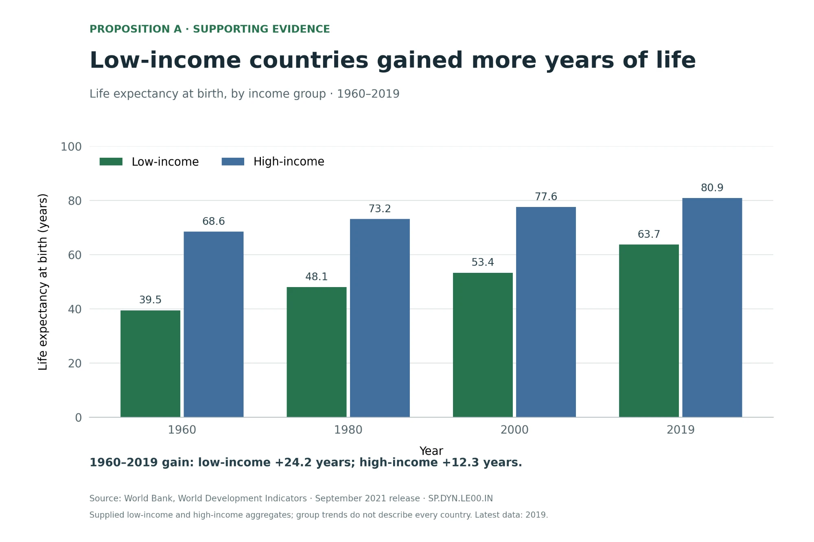
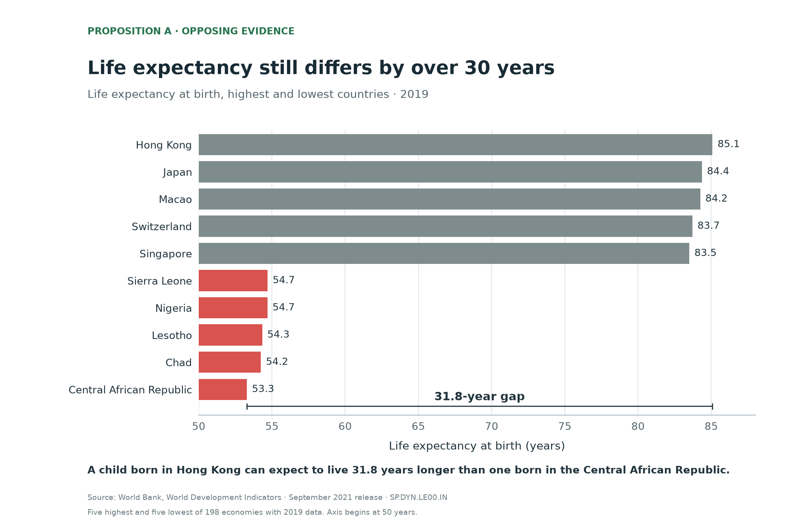

Proposition: The life expectancy gap between rich and poor countries has largely closed.
Dataset: World Bank Human Development Indicators (light-and-salt/World-Bank-Data-by-Indicators), life expectancy at birth, total (SP.DYN.LE00.IN), 1960–2019. Each design decision below is scored from −2 (fully deceptive) to +2 (fully earnest).
FOR the Proposition

Design Decisions and Rationale:
- −1 Using income-group averages. We compared the “low-income” and “high-income” groups instead of single countries. Averages hide the countries that barely improved, so it looks like all poor countries caught up together. We put a small footnote about this, but honestly most people won’t read it. We thought about showing every country, but it got messy and made the gap look way bigger.
- −1 Focusing on years gained, not the gap. The note under the chart says low-income countries gained 24.2 years and high-income ones gained 12.3, and the title is all about gains. That’s all true, but it makes you think “wow, they gained twice as much” and not “there’s still a 17-year gap.” We tried showing the gap number too, but it kind of killed the positive message, so we left it out. At the checkpoint we used a ratio chart (low-income as % of high-income), but feedback told us the percentage axis wasn’t intuitive, so we switched to grouped bars that show the years directly.
- −0.5 Showing only four years: 1960, 1980, 2000, 2019. Four evenly spaced snapshots look neutral and are easy to read, but they turn a bumpy path into steady steps. Between 1980 and 2000 low-income countries only gained 5.3 years, a slowdown that a full year-by-year line would have shown. We thought about a line chart, but snapshots made the start-to-end gain stand out more.
- +2 Y-axis starts at 0, with labels and a source. This is the honest part of the chart. Bars should start at 0, and every bar has its exact value. It also makes the whole chart look more trustworthy, so people are more likely to believe the framing choices above.
AGAINST the Proposition

Design Decisions and Rationale:
- −1.5 Only top 5 and bottom 5 out of 198 countries. We cut out everything in the middle, so the extremes look like the norm. If we showed all countries, you’d see most of them are between 65 and 80, which makes the gap feel way smaller. We picked 5 and 5 because it’s short and easy to read.
- −1 X-axis starts at 50. Because of this, the bottom bars look like a tenth of the top ones, but the real values are more like two thirds (53.3 vs 85.1). That makes the gap look huge at first glance. We kept the number labels on every bar, so it’s not fully deceptive, since a careful reader can still see the real values.
- −1 Single countries instead of income groups. The proposition is about rich vs poor countries as groups, and the gap between groups is about 17 years. Between the most extreme countries it’s about 32. We just changed what we compared and the gap almost doubled, without changing any data. This was probably the sneakiest choice because most people won’t notice the switch. To make sure that bigger number is the first thing people see, we labeled the 31.8-year gap directly on the chart with a bracket from the lowest bar to the highest.
- −1 Only 2019, with red for the bottom countries. Using one year hides 60 years of improvement, which is the main thing the “for” chart shows. The red makes the bottom five pop out against the gray and feel urgent, while the gray makes the top countries look like the normal baseline. Together, it reads as a fixed gap instead of one that’s been shrinking.
Final Reflection
Finding evidence for both sides was easy because the data supports both. Life expectancy in low-income countries went from 39.5 to 63.7 years, but they still live about 17 years less than high-income countries. The hard part was making each chart persuasive without the tricks being obvious. What surprised us most was that our strongest choices weren’t visual. They were about the data. When we switched from income-group averages to single countries, the gap almost doubled, from about 17 to about 32 years, and we didn’t change a single number. A lot of the persuasion happened before we even drew the chart, in steps the reader never sees.
We also noticed that the honest parts of our charts helped the slanted parts work. Starting the “for” chart at 0, adding labels, and citing the World Bank made it look objective, so the hopeful framing was easier to believe. This connects to Kennedy et al.’s point that conventions make a chart feel neutral even when it isn’t. Our titles were also never false, but like Kong et al. found, a title still decides what people focus on and remember.
So for us, ethical visualization means more than accurate numbers. The main takeaway should match what the full data shows, and the reader should be able to check it. There isn’t a perfect line, since the same choice can be fair in one case and misleading in another. Showing only 2019 is fine for “where are we now” but misleading for “how have things changed.” Our rule is that a choice is acceptable if it’s visible and helps answer the question, like a clear title or a labeled transformation. It’s misleading when it hides something the reader needs, like dropping 188 countries or starting bars at 50. Our simplest test: if the reader saw all the data, would they feel tricked? By that test, our “against” chart crosses the line more than our “for” chart, even though it’s the side we agree with. That was the biggest lesson for us, because it’s easiest to excuse misleading choices when they support what you already believe.